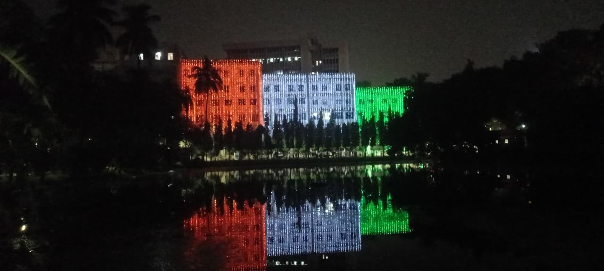

Bishop Morrow School, Krishnagar
Years: KG – Class 10
The place where it all began. Tucked away in the lanes of Krishnagar, Bishop Morrow wasn’t just my school — it was my **first home**, not the second. The tiled corridors, the echoing bell, the ever-serious prefects, and the discipline drills every morning shaped more than just my habits — they shaped my attitude. The school demanded sincerity and neat handwriting, and in return gave back stories, friendships, and the joy of tiny wins.
I served as the Junior Bosco House Captain, but leadership came through more than just the badge — through responsibilities, morning assemblies, and keeping your house flag upright. I was actively involved in cultural events: hosting programmes, poem recitations, storytelling, drama, dance, group singing, quizzes — you name it. BMS always encouraged participation, and I was rarely one to sit out.
The blackboards didn’t always erase well, but the lessons stuck. More than a decade here taught me to value punctuality, respect, and the ability to speak on stage without shaking like a leaf. Looking back, it wasn’t just a school — it was my training ground.

Bhavans Gangabux Kanoria Vidyamandir, Kolkata
Years: Class 11 – 12
Transitioning to Bhavan's felt like moving from a sleepy river to a swift current. The rigor kicked in — Mathematics, Physics, Chemistry, and Biology all vying for my time. The expectations were high, the exam pressure was real, but so was the self-discipline it cultivated. Bhavan's shaped me into a more focused, independent learner — and prepared me for the storm that was ISI.

Indian Statistical Institute, Kolkata
Years: B.Stat (Ongoing)
ISI — the name I once only read on Olympiad posters, now my everyday reality. It’s intense. Unforgiving at times. Yet intellectually electric. Courses that force you to think, professors who challenge assumptions, peers who constantly raise the bar. There are days of doubt, but more days of discovery. I don’t know how these years will read in hindsight, but they’re certainly transforming me — one theorem, one error, one breakthrough at a time.
